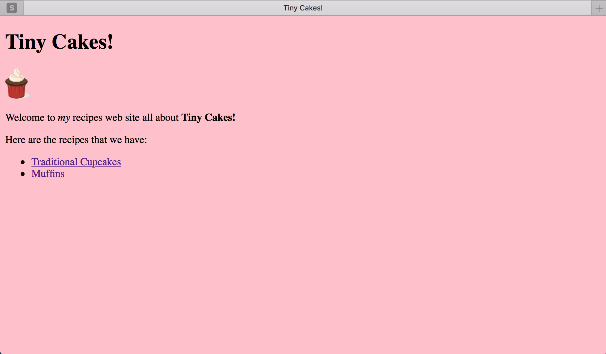
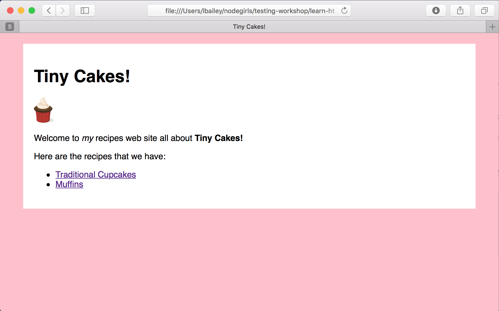

Etapy:
Step 7 - Używamy CSS
Na razie nasze strony wyglądają całkiem zwyczajnie. Jest tak, ponieważ nie określiliśmy dla nich żadnych stylów.
Gdy strona nie ma określonych żadnych stylów, przeglądarka użyje swojego domyślnego stylu dla „wyglądu” strony. Większość przeglądarek ma dość podobne style domyślne.
System używany przez strony internetowe do określania stylów nosi nazwę Cascading Style Sheets\Kaskadowe arkusze stylów lub w skrócie CSS.
Stwórzmy zatem proste arkusze stylów dla naszych stron.
Utwórz nowy plik o nazwie tinycakes.css o następującej treści:
html {
background-color: pink;
}
Zauważ, że używamy amerykańskiej pisowni słowa kolor (brytyjska - colour).
Edytuj plik index.html oraz podstrony z przepisami i w każdej z nich dodaj w sekcji <head>:
<link rel="stylesheet" href="tinycakes.css" />
Dla przykładu, w naszym pliku index.html sekcja <head> będzie wyglądać teraz tak:
<head>
<title>Tiny Cakes!</title>
<link rel="stylesheet" href="tinycakes.css" />
</head>
Odśwież stronę. Powinniśmy mieć teraz urocze, różowe tło.

Tag <link> mówi stronie, żeby używała pliku tinycakes.css jako arkusz stylu.
Arkusze stylów składają się z jednego lub więcej stylów. Styl składa się z selektora i listy deklaracji stylu otoczonych nawiasami klamrowymi. Każda deklaracja musi kończyć się średnikiem.
Selektor określa, do których elementów odnosi się styl.
Deklaracje określają własności i ich wartości dla danych elementów stylu.
W naszym przykładzie selektorem jest html, pojedyncza deklaracja (własność stylu: wartość) to background-color: pink.
Jak się można domyślić, ustawia nam to kolor tła elementu HTML, czyli całego dokumentu na różowy.
Istnieje wiele własności stylu, które można ustawić dla każdego elementu. Pełna lista oraz sposób ich wykorzystania znajduje się tutaj: https://developer.mozilla.org/en-US/docs/Web/CSS/Reference
Kolory
Kolory możemy zdefiniować na trzy sposoby:
- Możemy użyć słowa kluczowego (angielskiej) dla danego koloru:
pinkto różowy - Możemy użyć notacji RGB:
rgb(255, 192, 203)to różowy - Możemy użyć zapisu heksadecymalnego HEX (szesnastkowego):
#ffc0cbto też różowy.
Notacja RGB używa trzech wartości, jednej dla barwy czerwonej, jednej dla barwy zielonej i jednej dla barwy niebieskiej, czyli wartości R(ed) G(reen), B(blue). Wartości znajdują się w przedziale od 0 do 255. Istnieje również rozszerzona wersja „RGBA”, w której można określić czwartą wartość, przeźroczystość, którą określamy w procentach (wartość alfa).
Notacja szesnastkowa HEX zaczyna się znakiem #, po którym następują trzy liczby w formacie szesnastkowym, reprezentujące te same trzy wartości jak w przypadku RGB: czerwony, zielony i niebieski.
Wiele narzędzi pozwala wybrać kolor i znaleźć dla niego wartości HEX lub RGB. Wygoogluj prosty przykład: colour picker. Ponadto znajdziesz wiele aplikacji i stron internetowych oferujących podobne funkcje, jak na przykład: coolors.co/app, schemecolor.com, paletton.com.
Polecamy poniższą dokumentację dotyczącą kolorów: https://developer.mozilla.org/en-US/docs/Web/CSS/color_value
Dodajmy teraz styl do części <body>.
Dodamy arkusz stylu tinycakes.css zaraz po stylu html.
body {
background-color: white;
max-width: 800px;
margin: 20px auto;
padding: 20px;
font-family: sans-serif;
}
Odśwież stronę. Prawda, że wygląda trochę lepiej? Przyjrzyjmy się teraz, co zrobiliśmy.

- Ustawiliśmy kolor tła na biały.
- Ustawiliśmy maksymalną szerokość sekcji <body> na 800 pikseli. Domyślnie
<body>ma szerokość 100%, ponieważ należy do elementów blokowych. Właściwośćmax-widthoznacza, że <body> nadal będzie “próbowało” osiągnąć szerokość 100%, ale nigdy nie będzie szersze niż 800 pikseli. - Użyliśmy deklaracji
margin, aby ustawić wartość górnego i dolnego marginesu na20px, a lewego i prawego marginesu naauto. Właściwośćmarginto przestrzeń wokół elementu. Właściwośćautooznacza, że zarówno lewy, jak i prawy margines będą równe szerokości strony po odjęciu od niej szerokości elementu. Taki zabieg wycentruje element. Spróbuj teraz zmienić rozmiar okna przeglądarki, aby zobaczyć ten efekt. - Ustawiliśmy
paddingna20px. Padding to odstęp między zewnętrzną krawędzią elementu a jego zawartością (tzw. margines wewnętrzny). - Określiliśmy czcionkę bezszeryfową dla tekstu. Domyślnie większość przeglądarek używa czcionki szeryfowej. Moglibyśmy wybrać konkretną czcionkę, na przykład „Times New Roman” lub „Courier”, ale jeśli ta czcionka nie istnieje na komputerze użytkownika to przeglądarka i tak użyje domyślnej czcionki.
W tym kroku poznaliśmy różne przykłady wartości stylu. W następnym kroku przyjrzymy się bliżej selektorom.